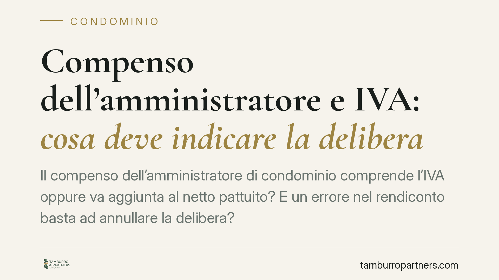

Compenso dell'amministratore e IVA: cosa deve indicare la delibera
Il compenso dell'amministratore di condominio comprende l'IVA oppure va aggiunta al netto pattuito? E un errore nel rendiconto basta ad annullare la delibera? Sono due questioni ricorrenti nelle assemblee, con effetti economici concreti per condomini e professionisti. Facciamo chiarezza sul quadro normativo e sugli orientamenti della giurisprudenza, senza dare per certo ciò che va ancora verificato.

Il quadro normativo
La disciplina del compenso dell'amministratore ruota attorno all'art. 1129, comma 14, cod. civ. La norma impone all'amministratore, all'atto dell'accettazione della nomina e del rinnovo, di specificare analiticamente l'importo dovuto a titolo di compenso. In mancanza di tale indicazione, la nomina è nulla. È bene distinguere i due profili: da un lato l'obbligo di indicazione analitica; dall'altro la conseguenza — la nullità della nomina — che scatta quando quell'indicazione manchi del tutto. Non si tratta quindi di una sanzione per un compenso ritenuto incongruo, ma della mancata determinazione dell'importo.
Sul versante fiscale, l'IVA è disciplinata dal D.P.R. 26 ottobre 1972, n. 633. Quando l'amministratore opera come professionista soggetto a partita IVA, le sue prestazioni sono imponibili. Ne deriva la questione centrale: la cifra deliberata dall'assemblea si intende comprensiva dell'imposta o al netto?
Cosa dice la giurisprudenza (con una cautela)
L'orientamento che si va delineando muove da un principio di trasparenza: il compenso indicato in sede di nomina, per rispondere all'esigenza di determinatezza voluta dall'art. 1129, comma 14, dovrebbe intendersi onnicomprensivo, salvo che il verbale o il preventivo prevedano espressamente l'aggiunta dell'IVA. La logica è coerente con la funzione della norma: il condòmino deve sapere in anticipo quanto gli costerà l'amministrazione.
Una precisazione doverosa. Le pronunce che circolano su questo tema vanno lette con prudenza: prima di attribuire a una specifica ordinanza un principio vincolante occorre verificarne numero, sezione e data. Su temi di questo tipo preferiamo indicare l'indirizzo interpretativo senza ancorarlo a citazioni non ancora confermate. Chi voglia far valere una posizione in assemblea o in giudizio dovrebbe basarsi su massime verificate alla fonte.
Errore contabile e validità della delibera
Un secondo profilo riguarda l'approvazione del rendiconto (art. 1130 cod. civ.). Non ogni imprecisione nei conti travolge la delibera. La distinzione operativa è tra:
- errore lieve o materiale: incongruenze marginali, refusi, arrotondamenti che non alterano la comprensibilità complessiva del rendiconto e la posizione dei singoli condomini. In genere non incidono sulla validità della delibera;
- errore rilevante: vizi che compromettono la chiarezza del documento, ne falsano il risultato o impediscono al condòmino di verificare le proprie quote. Qui la delibera diventa impugnabile.
Il criterio, dunque, non è la presenza dell'errore in sé, ma la sua idoneità a viziare la funzione informativa e ricognitiva del rendiconto.
Implicazioni pratiche
La lettura è speculare per le due parti.
Per i condomini. Conviene pretendere che il verbale di nomina indichi con precisione se il compenso è al lordo o al netto dell'IVA. In assenza di specificazione, la posizione più difendibile è che la cifra sia onnicomprensiva: un'eventuale pretesa successiva di aggiungere l'imposta va valutata alla luce di quanto effettivamente deliberato. Sul rendiconto, un errore isolato e marginale difficilmente giustifica un'impugnazione.
Per l'amministratore. Chi vuole ricevere il compenso oltre IVA deve dirlo in modo esplicito e verificabile già nel preventivo e nel verbale. Affidarsi a una prassi o a un'interpretazione implicita espone al rischio di vedersi riconosciuto solo l'importo indicato. Sul fronte contabile, la cura formale del rendiconto riduce lo spazio per contestazioni.
Cosa fare in concreto
- Verificate il verbale di nomina: controllate se il compenso è indicato come comprensivo o al netto dell'IVA.
- Chiedete l'indicazione analitica delle voci di compenso, distinguendo l'attività ordinaria da eventuali straordinari.
- Formalizzate ogni pattuizione sull'IVA per iscritto, nel preventivo e nel verbale, senza rinviare a interpretazioni.
- Documentate la contabilità con chiarezza, così da rendere il rendiconto verificabile voce per voce.
- Distinguete la portata dell'errore prima di impugnare: un vizio marginale raramente giustifica la contestazione della delibera.
Le pronunce in materia suggeriscono l'opportunità di allineare i verbali di nomina e i modelli di preventivo ai principi di trasparenza e determinatezza affermati dalla giurisprudenza, verificando sempre gli estremi delle massime prima di farne uso.
---
*Contributo informativo a cura di Tamburro & Partners Avvocati - Avv. Giuseppe Tamburro. Non costituisce parere legale.*
Ogni condominio ha una storia a sé.
Se gestisci un'amministrazione e vuoi un confronto su una specifica questione condominiale, scrivi allo studio. Ti rispondiamo entro un giorno lavorativo.